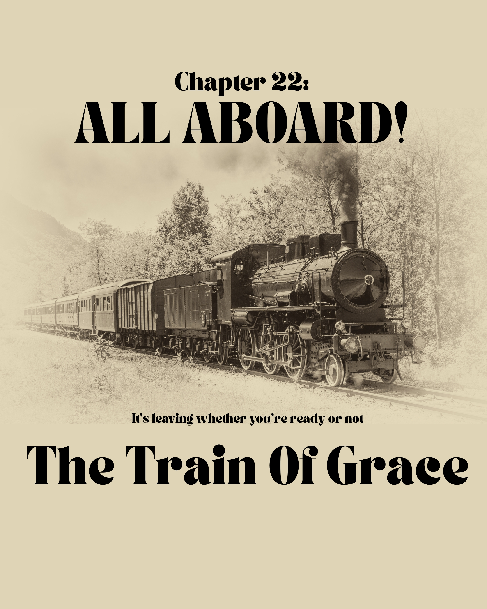
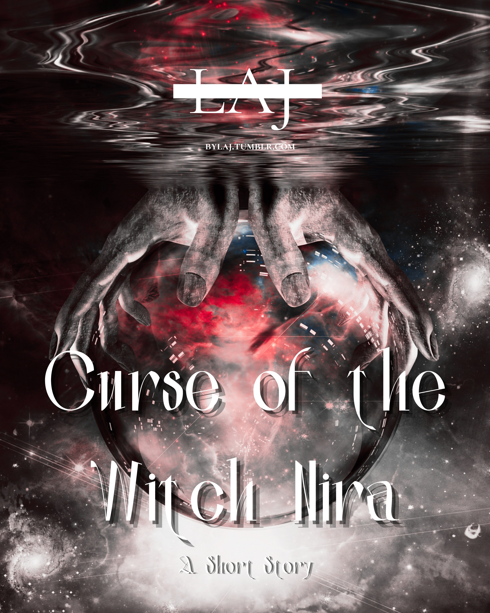
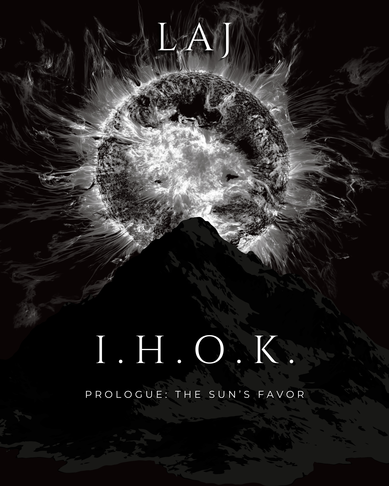

IHOK: First lines
"Like all mornings, after the moon had its fun, the sun would take its place in the sky, draping its unforgiving light over the city..."
"Like all mornings, after the moon had its fun, the sun would take its place in the sky, draping its unforgiving light over the city..."
"Yet, no matter how far the light could stretch, how fast it moved—for the man who preferred the only lighting equally promised to everyone under the sun, the light was always the last to reach."
– LAJ, 2025
You welcome me into your home every night.
After the curtains close,
Blinding the windows of your soul,
All for the safe departure
On a delayed return
From the place your mind will go.
And every night,
You come to me without fright.
Between the fabrics of your peace,
You’ll gently lay your trust in me.
Even carry my reveries into the waking.
And before you’ve removed your threadings,
You’ll curse me for leaving hastily
The absence of knowledge of meetings before
Will bring my fears to the shore
The friend in me you’ll no longer see
That final time you’ll walk through my door
Despite my bringing more than everlasting peace
For all the nights that were too short
– LAJ, Summer 2025
You say I’m the root of all evil.
As if I’m the seed that blooms the deceitful
Sprouting tragedies well beyond imaginable
But still claimed I was a power that built your castles.
Even when your rivers turned shades of red,
You molded me from the melted halos of the dead,
Imprinted on my skin, the allegiance you pledged
Exchanging blessings for things you could possess.
Having me has manifested the world of your dreams
Yet the sum of your greed sacrificed the room to be happy
And still the abundance of me attracts bodies for the lonely
The problem and always the solution, that much we can agree
For you, I am meant to serve
For better or worse
Though, these things, I cannot discern
It’s with you that I find my worth.
– LAJ, Summer 2025

Lineage. Legacy. Inheritance.
At 7:24 AM June 6, 2017, those three words and the weight of responsibility they carried in this world I was now a part of were the furthest thing from my mind. I was only twenty-two years old when my world of motherhood came into existence.
– LAJ, Summer 2025

– LAJ, Feb 2026
Before the power on this earth was banished to the night by a curse from the Gods, there was a time, back when this world was a newborn, and the magic it carried from worlds beyond was still wet on its skin.
– LAJ, Summer 2025

“Mama?”
Hearing his voice for the first time after a long stint of silence, she quickly met the eyes of her youngest, “Yes, baby?”
Not wanting to compromise the security of the tucking she’d done, he pointed to the window.
“Story?” he signed.
– LAJ, 2025-2026